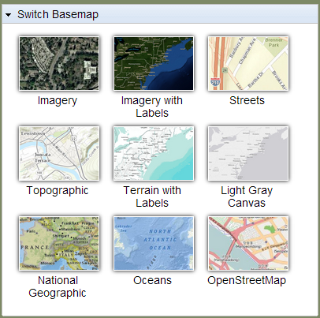

GETTING AROUND THE MAP: Switch Basemap
What is a basemap? A map depicting background reference information such as landforms, roads, landmarks, and political boundaries, onto which other thematic information is placed. A basemap is used for locational reference and often includes a geodetic control network as part of its structure.
Definition from: http://support.esri.com/en/knowledgebase/GISDictionary/term/basemap
The application has a built-in basemap gallery.

The basemap gallery allows you to toggle between different basemaps to customize your user experience and PNG maps. To open the basemap gallery click "Switch Basemap", select the basemap you would like to change to, and then click "Switch Basemap" again to close the gallery.
Created with the Personal Edition of HelpNDoc: Full-featured multi-format Help generator